전자캐드기능사 (2015-04-04 기출문제)
1과목: 전기전자공학(대략구분)
1. 다음 중 증폭회로를 구성하는 수동소자에서 자유전자의 온도에 의하여 발생하는 잡음은?
- 산탄 잡음
- 열잡음
- 플리커 잡음
- 트랜지스터 잡음
(정답률: 81%)

2. 수정발진기의 특징 중 가장 큰 장점은?
- 발진이 용이하다.
- 주파수 안정도가 높다.
- 발진세력이 강하다.
- 소형이며 잡음이 적다.
(정답률: 75%)
3. 입력 전압이 500[㎷]일 때 5[V]가 출력되었다면 전압 증폭도는?
- 9배
- 10배
- 90배
- 100배
(정답률: 70%)
4. JK 플립플롭의 J입력과 K입력을 묶어서 1개의 입력 형태로 변경한 것은?
- RS 플립플롭
- D 플립플롭
- T 플립플롭
- 시프트 레지스터
(정답률: 74%)
5. 그림과 같은 2단궤환 증폭회로에서 궤환전압 Vf 는?
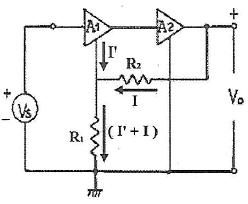
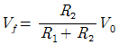
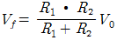
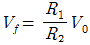
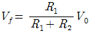
(정답률: 54%)
6. 다음 중 펄스의 시간적 관계의 기본 조작이 아닌 것은?
- 정형
- 선택
- 비교
- 변이
(정답률: 54%)
7. 저항 20[Ω]인 도체에 100[V]의 전압을 가할 때, 그 도체에 흐르는 전류는 몇 [A] 인가?
- 0.2
- 0.5
- 2
- 5
(정답률: 81%)
8. 반도체의 다수캐리어로 옳게 짝지어진 것은?
- P형의 정공, N형의 전자
- P형의 정공, N형의 정공
- P형의 전자, N형의 전자
- P형의 전자, N형의 정공
(정답률: 79%)
9. 3단자 레귤레이터의 특징이 아닌 것은?
- 입력 전압이 출력 전압 보다 높다.
- 방열이 필요 없다.
- 회로의 구성이 간단하다.
- 전력 손실이 높다.
(정답률: 70%)
10. 트랜지스터가 스위치로 ON/OFF 기능을 하고 있다면 어떤 영역을 번갈아 가면서 동작하는가?
- 포화영역과 차단영역
- 활성영역과 포화영역
- 포화영역과 항복영역
- 활성영역과 차단영역
(정답률: 62%)
11. 그림과 같은 발진기에서 A점과 B점의 파형을 옳게 나타낸 것은?
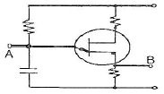
- A: 펄스, B: 펄스
- A: 톱니파, B: 펄스
- A: 톱니파, B: 톱니파
- A: 펄스, B: 톱니파
(정답률: 68%)
12. 전원주파수가 60[Hz]일 때 3상 전파정류회로의 리플 주파수는?
- 90[Hz]
- 120[Hz]
- 180[Hz]
- 360[Hz]
(정답률: 51%)
13. 어떤 정류회로의 무부하 시 직류 출력전압이 12[V]이고, 전부하 시 직류 출력전압이 10[V]일 때 전압변동률은?
- 5[%]
- 10[%]
- 20[%]
- 40[%]
(정답률: 68%)
14. 그림과 같은 4개의 콘덴서회로의 합성정전용량은 얼마인가?(단, 각 콘덴서의 값은 4[㎌]이다.)
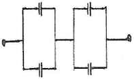
- 4[㎌]
- 8[㎌]
- 12[㎌]
- 16[㎌]
(정답률: 69%)
15. 회로에서 입력단자와 출력단자가 도통되는 상태는?
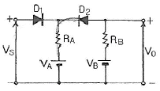
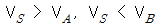
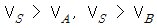
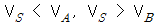
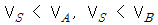
(정답률: 58%)
2과목: 전자계산기일반(대략구분)
16. UJT를 이용한 기본 발진회로일 때 발진주기 τ 는?(단, η는 스탠드 오프비이다.)
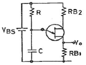
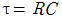
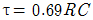
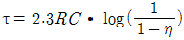
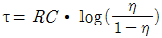
(정답률: 57%)
17. 16진수 (5C)16을 10진수로 변환하면?
- 72
- 86
- 92
- 96
(정답률: 71%)
18. 전자계산기의 특징이 아닌 것은?
- 기억하는 능력이 크다.
- 창의적 능력이 있다.
- 계산은 빠르고 정확하다.
- 논리적 판단 및 비교능력이 있다.
(정답률: 85%)
19. 사칙연산 명령이 내려지는 장치는?
- 입력장치
- 제어장치
- 기억장치
- 연산장치
(정답률: 57%)
20. F=(A, B, C, D) = ∑(0, 1, 4, 5, 13, 15) 이다. 간략화 하면?
- F = A’C’ + BC’D + ABD
- F = AC + B’CD + ABD
- F = A’C’ + ABD
- F = AC + A’B’D’
(정답률: 58%)
21. 데이터의 구성 체계에 속하지 않는 것은?
- 비트
- 섹터
- 필드
- 레코드
(정답률: 73%)
22. CPU의 내부 동작에서 실행하고자 하는 명령의 번지를 지정한 후 명령 레지스터에 불러오기까지의 기간은?
- 명령 사이클(Instruction cycle)
- 기계 사이클(Machine cycle)
- 인출 사이클(Fetch cycle)
- 실행 사이클(Execution cycle)
(정답률: 63%)
23. 배타적(Exclusive) OR 게이트를 나타내는 논리식은?
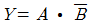
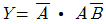
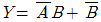
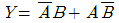
(정답률: 70%)
24. 불 대수의 표현이 올바른 것은?
- A + 1 = 1
- Aㆍ1 = 1
- AㆍA = 1
- A + A = 1
(정답률: 71%)
25. 연산 결과가 양인지 음인지, 또는 자리올림(carry)이나 오버플로우(overflow)가 발생했는지를 기억하는 장치는?
- 가산기(adder)
- 누산기(accumulator)
- 데이터레지스터(data register)
- 상태레지스터(status register)
(정답률: 58%)
26. 불 대수에서 하나의 논리식과 다른 논리식 사이에서 AND는 OR로, OR은 AND로, 0은 1로, 1은 0으로 변환하는 원리는?
- 쌍대의 원리
- 불 대수의 원리
- 드모르간의 원리
- 교환법칙의 원리
(정답률: 58%)
27. 어떤 마이크로프로세서가 1100 0110 0101 1110의 주소 버스를 점하고 있다. 이 상태는 메모리의 몇 page에 출입하고 있는 것인가?
- 37
- 124
- B53C
- C65E
(정답률: 75%)
28. 마이크로프로세서를 구성하고 있는 버스에 해당하지 않는 것은?
- 데이터 버스
- 번지 버스
- 제어 버스
- 상태 버스
(정답률: 47%)
29. 25.4[mm]는 몇 [inch]에 해당하는가?
- 1[inch]
- 10[inch]
- 100[inch]
- 1000[inch]
(정답률: 49%)
30. 다음 중 극성을 갖고 있고, 안정적인 대용량 전원 공급을 위해 사용되는 소자는?
- 저항
- 브리지 다이오드
- 전해 콘덴서
- 세라믹 콘덴서
(정답률: 76%)
3과목: 전자제도(CAD) 이론(대략구분)
31. 원점으로부터 X, Y축 방향으로 이동된 거리의 좌표를 무엇이라 부르는가?
- 상대좌표
- 절대좌표
- 극좌표
- 상대극좌표
(정답률: 59%)
32. 실제 치수가 30[mm]의 물건을 2/1의 배척으로 그렸을 때 도면에 기입하는 치수로 옳은 것은?
- 15[mm]
- 30[mm]
- 60[mm]
- 120[mm]
(정답률: 47%)
33. PCB 설계 시 4층 기판으로 설계할 때 사용하지 않는 층은?
- 납땜면
- 전원면
- 접지면
- 내부면
(정답률: 62%)
34. A3 size 도면의 크기[mm]는?
- 297 × 420
- 496 × 210
- 396 × 320
- 696 × 520
(정답률: 75%)
35. 다음 중 전자 CAD의 데이터 파일이 아닌 것은?
- 거버(Gerber)
- 부품리스트(PART LIST)
- 프린트 기판 재료(Print Board Material)
- 배선정보(NET LIST)
(정답률: 68%)
36. 다음 논리 게이트의 명칭으로 옳은 것은?
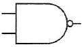
- OR
- NAND
- AND
- NOR
(정답률: 83%)
37. 부품을 삽입하지 않고, 다른 층간을 접속하기 위하여 사용되는 도금 도통 홀을 의미하는 것은?
- 비아 홀(Via hole)
- 키 슬롯(Key slot)
- 외층(External layer)
- 액세스 홀(Access hole)
(정답률: 76%)
38. 노이즈 대책용으로 사용될 콘덴서의 구비조건과 거리가 먼 것은?
- 내압이 낮을 것
- 절연 저항이 클 것
- 주파수 특성이 양호할 것
- 자기공진 주파수가 높은 주파수 대역일 것
(정답률: 53%)
39. 회로도의 설계할 때 고려해야 할 사항 중 틀린 것은?
- 선의 교차가 적고 부품이 도면 전체에 고루 분포되게 그린다.
- 물리적인 관련이나 연결이 있는 부품 사이에는 실선으로 그린다.
- 대칭으로 동작하는 회로는 접지를 기준으로 대칭되게 그린다.
- 주 회로와 보조회로가 있는 경우에는 주 회로를 중심으로 그린다.
(정답률: 64%)
40. 일반적으로 전자캐드(CAD)에서 회로도를 그리는 프로그램을 통칭하는 용어는?
- CAM
- Layout
- Gerber
- Schematic
(정답률: 65%)
41. 검도의 목적으로 옳지 않은 것은?
- 도면 척도의 적절성
- 표제란에 필요한 내용
- 조립 가능 여부
- 판매 가격의 적절성
(정답률: 73%)
42. 기능에 따라 CAD 프로그램을 분류할 때 전자 계열 분류의 약자는?
- AEC
- EDA
- MDA
- GIS
(정답률: 71%)
43. 부품의 단자 또는 도체 상호간을 접속하기 위해 구멍 주위에 만든 특정한 도체 부분은?
- 리드
- 납마스크
- 패턴
- 랜드
(정답률: 64%)
44. 전자 및 통신제도의 개요에 대한 설명으로 옳지 않은 것은?
- 기기, 부품 상호간에 전기적 흐름을 잘 이해하여야 한다.
- 수동부품과 능동부품은 상호 간섭 작용이 발생하므로 별도의 회로도 작성이 요구된다.
- 도면에는 많은 부품 기호가 있기 때문에 부품 동작특성을 알아야 한다.
- 사용되는 부품의 종류가 다양하므로 부품의 외형, 치수, 특성을 정확히 이해하여야 한다.
(정답률: 66%)
45. 다음 중 인쇄회로 기판에서 적층 형태의 종류에 해당되지 않는 것은?
- 다각형 PCB
- 단면 PCB
- 양면 PCB
- 다층면 PCB
(정답률: 67%)
46. DXF 파일의 섹션이 아닌 것은?
- 헤더(Header) 섹션
- 블록(Block) 섹션
- 테이블(Table) 섹션
- 글로벌(Global) 섹션
(정답률: 66%)
47. 다음 중 전자 CAD에서 DRC로 할 수 없는 기능은?
- 부품용량의 정확성
- 금지영역 조사
- 올바르지 못한 배선
- 각 요소 간의 최소 간격
(정답률: 49%)
48. 전자회로에 사용되는 전자소자 중 수동소자(부품)가 아닌 것은?
- 고정저항기
- 초크코일
- 전해콘덴서
- 트랜지스터
(정답률: 68%)
49. 다음 중 인쇄회로기판의 제작순서가 옳은 것은?
- 사양관리→CAM작업→드릴→노광
- 사양관리→노광→CAM작업→드릴
- CAM작업→드릴→노광→사양관리
- CAM작업→사양관리→노광→드릴
(정답률: 51%)
50. 기본 회로도 작성요령 중 틀린 것은?
- 접속선은 중단할 수 있다.
- 가능하면 수직ㆍ수평선 보다는 사선을 많이 사용하여야 한다.
- 너무 긴 선이나 외부 사이의 접속선은 가급적 사용하지 않는다.
- 회로도는 좌에서 우로 읽어 나갈 수 있게 배열하여야 한다.
(정답률: 73%)
51. 회로 접속 상태가 명확하고 회로 추적이 용이하므로 착오에 의한 오배선을 방지할 수 있는 기본적인 도면은?
- 기선 접속도
- 피드선 접속도
- 연속선 접속도
- 고속도형 접속도
(정답률: 53%)
52. PCB 설계에서 부품의 배치방법으로 틀린 것은?
- 커넥터는 PCB의 외곽 쪽에 배치한다.
- 고전압부와 저전압부는 분리하여 배치한다.
- 부품은 회로도상의 신호 흐름을 따라서 배치한다.
- 디지털 회로와 아날로그 회로는 분리하지 않고 배치한다.
(정답률: 76%)
53. 다음 전자 부품 기호의 명칭으로 옳은 것은?
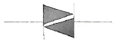
- 트랜지스터(TR)
- 다이액(DIAC)
- 제너 다이오드(Zener Diode)
- 전기장 효과 트랜지스터(FET)
(정답률: 79%)
54. 컴퓨터로 설계하는 CAD 시스템 도입의 목적이 아닌 것은?
- 시간의 효율적 관리
- 설계비용 절감
- 활용분야 협의성
- 도면의 품질 향상
(정답률: 59%)
55. CAD 시스템에서 도면화를 위한 표준 장치로서, 출력이 도형 형식일 때 정교한 표현을 위해 사용되는 것은?
- 플로터
- 모니터
- 잉크젯 프린터
- 레이저 프린터
(정답률: 56%)
56. PCB 제조 과정에서 프린트 배선판 상의 특정 영역에 도포하는 내열성 비폭 재료로 납땜 작업 시 이 부분에 땜납이 붙지 않도록 하는 역할을 하는 것은?
- 포토 레지스트(photo resist)
- 에칭 레지스트(etching resist)
- 솔더 레지스트(solder resist)
- 도금 레지스트(plating resist)
(정답률: 59%)
57. 제도 도면에 반드시 그려야 할 사항이 아닌 것은?
- 재단마크
- 표제란
- 중심마크
- 윤곽선
(정답률: 63%)
58. 블록선도에서 삼각형 도형이 사용되는 것은?
- 전원회로
- 변조회로
- 연산증폭기
- 복조회로
(정답률: 72%)
59. 전자캐드의 일반적인 특징에 관한 설명으로 틀린 것은?
- 기구의 설계에 적합하다.
- 회로의 설계에 적합하다.
- 회로의 동작 검증이 용이하다.
- 인쇄회로기판의 설계에 적합하다.
(정답률: 66%)
60. 다음 마일러 콘덴서의 용량으로 가장 적합한 것은?
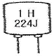
- 22000[㎊]
- 224[㎊]
- 0.22[㎌]
- 22.4[㎌]
(정답률: 69%)